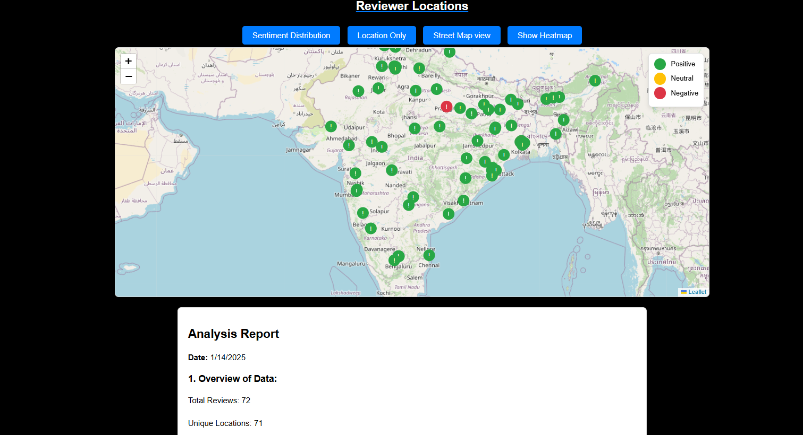

SentimentSpectrum
Live Review Sentiment Monitoring and Analysis System

A few months ago, I developed a web application called SentimentSpectrum using the Flask framework. This project aimed to predict customer sentiment for eCommerce websites like Flipkart by leveraging a BERT-based pre-trained model. What makes this application truly remarkable is its ability to provide real-time sentiment analysis, categorizing feedback into labels such as Positive, Negative, and Neutral, These insights empower businesses to better understand customer opinions, enabling data-driven decision-making and enhanced customer experiences.
In the fast-paced world of eCommerce, understanding customer sentiment is essential for improving product offerings and enhancing customer satisfaction. That’s where SentimentSpectrum steps in—a web application I developed using the Flask framework, designed to provide real-time sentiment analysis on eCommerce reviews, specifically for platforms like Flipkart. Built on the BERT-based pre-trained model, SentimentSpectrum predicts sentiments as Positive, Negative, or Neutral, offering crucial insights for businesses and analysts. Here's an overview of what makes SentimentSpectrum a groundbreaking tool.
Key Features
1. Real-Time Data Collection and Processing
- Tools Used: Selenium with ChromeDriver
- Functionality: Automates live customer review extraction and data preprocessing for accurate analysis.
2. Advanced Data Visualization
- Graphical Insights: Various graphical representations using Matplotlib and Seaborn.
- Geographical Representation: Interactive maps using Nominatim and Leaflet.
3. Target Users
- eCommerce Businesses
- Data Analysts
- Market Researchers
- Product Managers
- Data Science Enthusiasts
Project Scope
This project focuses on automating customer review scraping, sentiment analysis using a pre-trained BERT model, and generating visual representations of the data.
- Data Collection: Selenium scrapes reviews from Flipkart in real-time.
- Sentiment Analysis: Uses the
nlptown/bert-base-multilingual-uncased-sentimentmodel. - Data Visualization: Matplotlib, Seaborn, Leaflet, and OpenStreetMap.
- User Interface: Intuitive interface for seamless interaction and exploration.
Technologies Used
- Flask Framework
- Selenium
- BERT (nlptown/bert-base-multilingual-uncased-sentiment)
- Matplotlib & Seaborn
- Leaflet & OpenStreetMap
How it's works
Important Warning
Ensure that the ChromeDriver version matches your installed Chrome browser version. Incompatible versions can result in errors during data retrieval.
To check your Chrome version, navigate to chrome://settings/help in Chrome and download the
appropriate version of ChromeDriver.
Installation & Setup
- Clone the repository:
git clone https://github.com/augustine-aj/SentimentSpectrum.git - Navigate to the project directory:
cd SentimentSpectrum - Install dependencies:
pip install -r requirements.txt - Run the application:
python connections.py - Open
http://localhost:5000/in your browser.
Project Directory Structure
SentimentSpectrum/
├── chromedriver/
│ └── chromedriver.exe
├── Data/
│ ├── Raw Data/
│ ├── Sentiment Data/
│ ├── documents/
├── frontend/
│ ├── static/
│ ├── templates/
├── config.py
├── connections.py
├── datacleaner.py
├── phone_list.py
├── reviewScraper.py
├── sentiment_model.py
├── visualisations.py
Key Features index page
The Sentiment Spectrum Review & Analysis System is a user-friendly web interface designed for conducting sentiment analysis on customer reviews using advanced AI tools. Here's a detailed explanation of how your index.html page works
The page introduces and explains the purpose of the Sentiment Spectrum system. It allows users to interact with the tool by selecting brands, models, or providing product links to scrape and analyze customer reviews. The functionalities include scraping reviews, analyzing trends, visualizing data, and downloading CSV reports.
- Demo Mode: Offers a quick system demonstration by scraping reviews from a pre-defined Flipkart product link.
-
Customizable Review Scraping:
- Dropdown options for Brand (e.g., iPhone, Samsung, Xiaomi, OnePlus) and dynamically loaded Model.
- Manual product link input for direct scraping.
-
Review Type Selection:
- Overall Review: General customer feedback.
- Feature Review: Insights on specific features (e.g., battery, performance).
- Start Review Scraping: Initiates data scraping, with progress updates and completion alerts.
Navigation After Scraping
- Analysis & Visualization: Explore trends and insights from scraped data or select results from stored CSV files.
- Geographical Visualization: Visualize regional review trends using interactive maps.
- View & Download CSV Files: Access structured data for offline analysis.
Workflow
- Select a brand/model or input a product link.
- Choose a review type.
- Press Start Review Scraping to begin the process.
- View insights through:
- Analysis and visualization tools.
- Geographical maps.
- Downloadable CSV files.
Sentiment Spectrum - Analysis and Visualization
The Analysis and Visualization page of Sentiment Spectrum is designed to offer detailed insights into product reviews by visualizing customer sentiment and performance data. It utilizes powerful libraries like Matplotlib and Seaborn to create dynamic and engaging visualizations.

Key Visualizations
Here are the primary visualizations provided on the Analysis and Visualization page:
- Sentiment Distribution Bar Plot: Displays the breakdown of reviews into Positive, Neutral, and Negative categories. Helps gauge the overall customer sentiment.
- Reviews Over Time Histogram: Tracks the number of reviews submitted month by month, highlighting trends such as increased customer interest around product launches.
- Sentiment Distribution Over Time (Stacked Histogram): Shows how customer sentiment (Positive, Neutral, and Negative) evolves over time. Helps businesses identify shifts in customer mood.
- Ratings Distribution Bar Plot: Displays the distribution of star ratings across reviews, helping to visualize overall product satisfaction. A higher number of 5-star reviews signals positive reception.
- Proportion of Total Rating and Review Pie Chart: Visualizes the total number of ratings and reviews. Indicates which products attract more attention and engagement from customers.
- Price Comparison Bar Plot: Compares discounted and actual prices of the product, giving insights into pricing strategies and customer perception.
Insights and Recommendations
After analyzing the visualizations, the page provides actionable insights:
- Identifying Strong Product Features: Highlighting positive customer feedback.
- Areas for Improvement: Based on negative reviews (e.g., product defects or service issues), businesses can take corrective actions.
- Influence of Pricing Strategies: A clear understanding of how discount pricing impacts customer perception and satisfaction.
The system encourages businesses to:
- Focus on enhancing product strengths as indicated by high customer satisfaction (e.g., 5-star reviews).
- Address and resolve negative feedback to improve customer experience.
- Engage customers with neutral sentiments to convert them into satisfied users.
SentimentSpectrum - Geographical Visualization
The Sentiment Spectrum is a powerful tool that uses interactive visualizations to analyze customer review data. By combining geographical distributions with feature-specific insights, it helps businesses uncover trends, improve strategies, and enhance customer satisfaction.
Geographical Sentiment Mapping
The tool uses Leaflet, an open-source JavaScript library, to display reviewer locations on an interactive map. Each location is marked with a color representing customer sentiment:
- Green: Positive sentiment
- Yellow: Neutral sentiment
- Red: Negative sentiment
This visualization identifies regional trends and areas with predominant positive or negative feedback, aiding businesses in addressing regional disparities in customer satisfaction.
Feature-Specific Heatmaps
To delve deeper, heatmaps for specific product features (e.g., camera, battery, display, performance) reveal concentrated feedback. These insights allow for:
- Recognizing regions praising features, like excellent camera quality.
- Identifying areas critiquing issues, such as poor battery performance.
Why Visualizations Matter in Data Science
- Enhanced Understanding: Transforms complex data into simple, intuitive visuals.
- Quick Insights: Offers immediate trends for faster decision-making.
- Effective Communication: Simplifies the presentation of findings to a broader audience.
- Pattern Recognition: Highlights hidden trends and anomalies in customer feedback.
Core Page Features
- Sentiment Distribution Map: Highlights regional sentiment.
- Feature-Specific Heatmaps: Visualizes concentrated feedback for different product attributes.
- Interactive Filters: Lets users explore sentiments by feature or region.
Integrating such dynamic visualizations makes data analysis more effective, guiding businesses to improve products, tailor marketing, and enhance overall customer engagement. Through the Sentiment Spectrum, actionable insights drive growth and satisfaction.
SentimentSpectrum - view and download csv files page
This page offers a user-friendly interface to access and manage review datasets categorized by product features and overall sentiments. Users can view or download CSV files for detailed analysis of customer feedback on Battery, Camera, Display, and Performance, enabling actionable insights.
Reviews - Data Columns
- Review_Title & Review: Provide summarized and detailed customer feedback.
- Reviewer_Name & Reviewer_Location: Include reviewer identity and location.
- Review_Date: Indicates when the review was posted.
- Review_Likes & Dislikes: Show agreement or criticism of the review.
- Sentiment_Text & Sentiment: Text and inferred categories (positive, neutral, negative).
- Sentiment_Score: Numerical sentiment intensity (-1 to +1).
Why This Page is Useful
- Comprehensive Access: Offers categorized data for both specific features and overall sentiment analysis.
- Dual Functionality: Enables quick online viewing and detailed offline analysis.
- Detailed Insights: Data like sentiment scores and reviewer locations support in-depth qualitative and quantitative analysis.
This streamlined approach ensures comprehensive customer feedback analysis and aids in strategic decision-making.
Conclusion
SentimentSpectrum provides businesses and data scientists with powerful tools for extracting and analyzing customer sentiments from live eCommerce reviews. Its comprehensive features and user-friendly interface make it an essential resource for data-driven decision-making.
To explore the project, visit the SentimentSpectrum GitHub Repository.
Contact Me